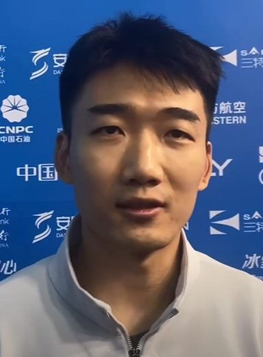

Китай выиграл четыре золота на этапе Кубка мира по конькобежному спорту в Пекине
Нин Чжунъянь победил на 1000 м с рекордом катка и на 1500 м, а Лянь Цзывэнь и Гао Тинъюй выиграли по одному забегу на 500 м на «Ледяной ленте».

Что произошло
Китайские конькобежцы выиграли четыре золотые медали на спринтерских и средних дистанциях у мужчин на этапе Кубка мира ISU в Пекине, который прошёл на Национальном конькобежном овале с 13 по 15 ноября 2026 года. Это был первый этап Кубка мира в новом сезоне.
Две победы одержал Нин Чжунъянь. В первый день он выиграл 1000 метров с результатом 1.07,43 — это рекорд катка, известного как «Ледяная лента». В субботу он победил на дистанции 1500 метров — 1.43,64, сообщило агентство «Чайна ньюс».

Ещё два золота принесла дистанция 500 метров, которую мужчины бежали дважды. Лянь Цзывэнь выиграл первый забег в субботу с результатом 34,64 — это его первая личная победа на этапах Кубка мира. Вторым стал нидерландец Стефан Вестенбрук (34,71), третьим — Гао Тинъюй, олимпийский чемпион 2022 года на этой дистанции (34,80).
В воскресенье порядок изменился. Гао выиграл второй забег с результатом 34,61, Лянь стал вторым — 34,77, сообщает Sina. Они бежали вместе в последней паре.
Другие результаты
Лянь также завоевал бронзу на 1000 метров в первый день. На дистанции 1500 метров у женщин в субботу Хань Мэй заняла третье место после норвежки Рагне Виклунд и Йой Бёне из Нидерландов. В первом забеге на 500 метров у женщин весь пьедестал заняли нидерландские спортсменки, китаянка Тянь Жуйнин стала пятой.

Главные факты и цифры
- 1000 м, мужчины (13 ноября): Нин Чжунъянь — 1.07,43, рекорд катка; Лянь Цзывэнь — третье место.
- 1500 м, мужчины (14 ноября): Нин Чжунъянь — 1.43,64.
- 500 м, мужчины, первый забег (14 ноября): Лянь Цзывэнь — 34,64, Стефан Вестенбрук — 34,71, Гао Тинъюй — 34,80.
- 500 м, мужчины, второй забег (15 ноября): Гао Тинъюй — 34,61, Лянь Цзывэнь — 34,77.
- 1500 м, женщины (14 ноября): Хань Мэй — третье место.
- Медали Китая в этих забегах: четыре золотые, одна серебряная, три бронзовые.
В последний день также прошли командная гонка преследования и масс-старт; их результаты в этом материале не рассматриваются.